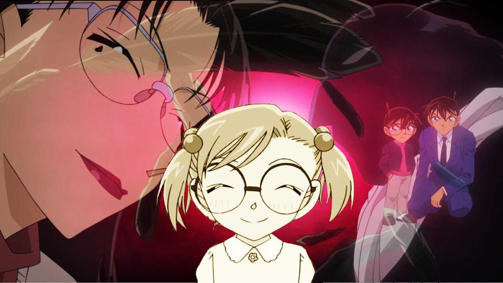
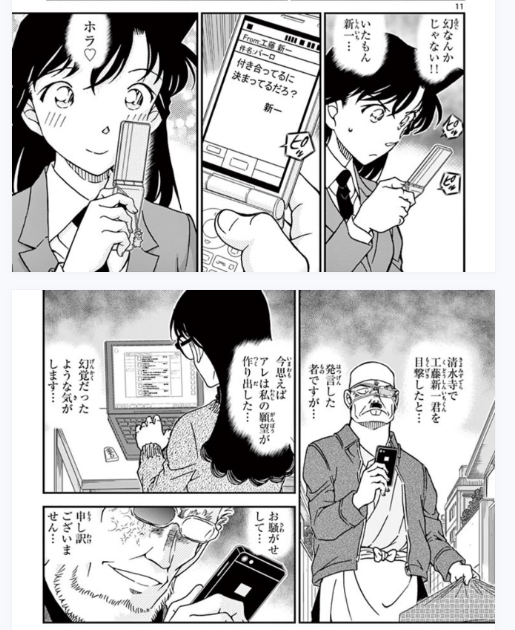
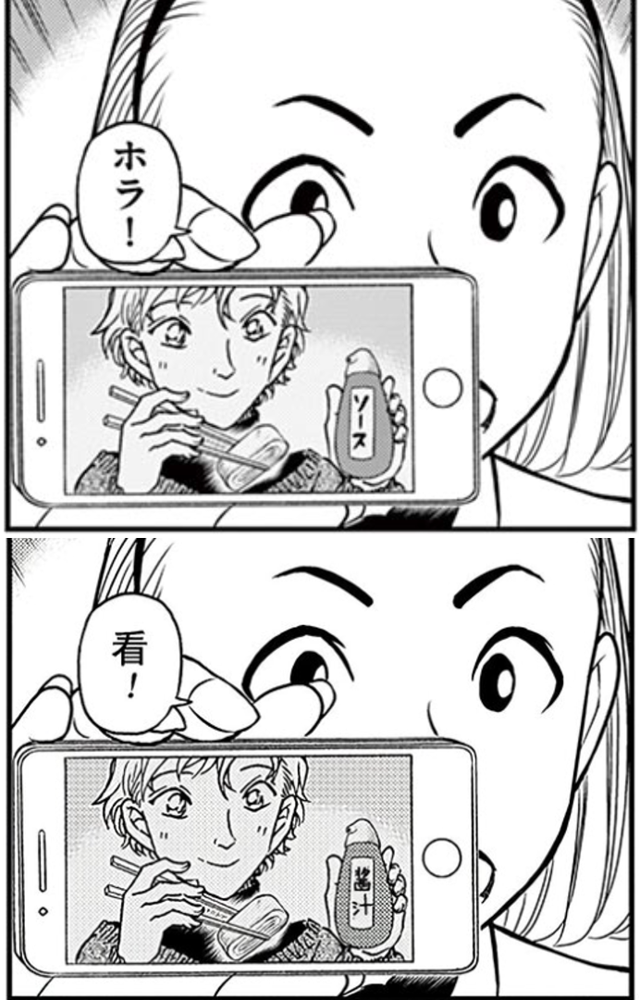
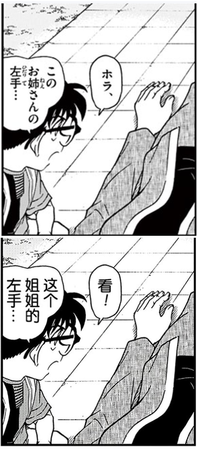
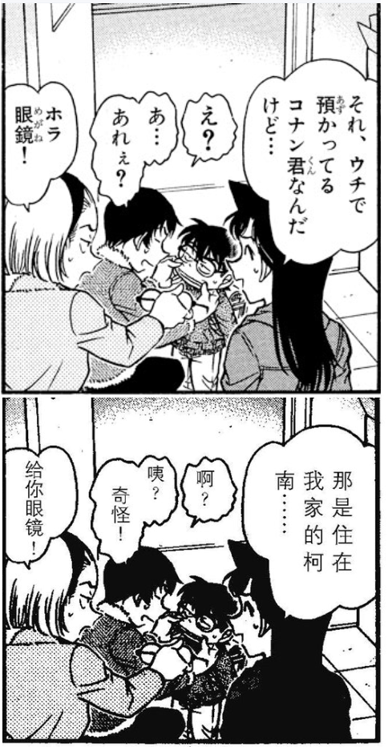
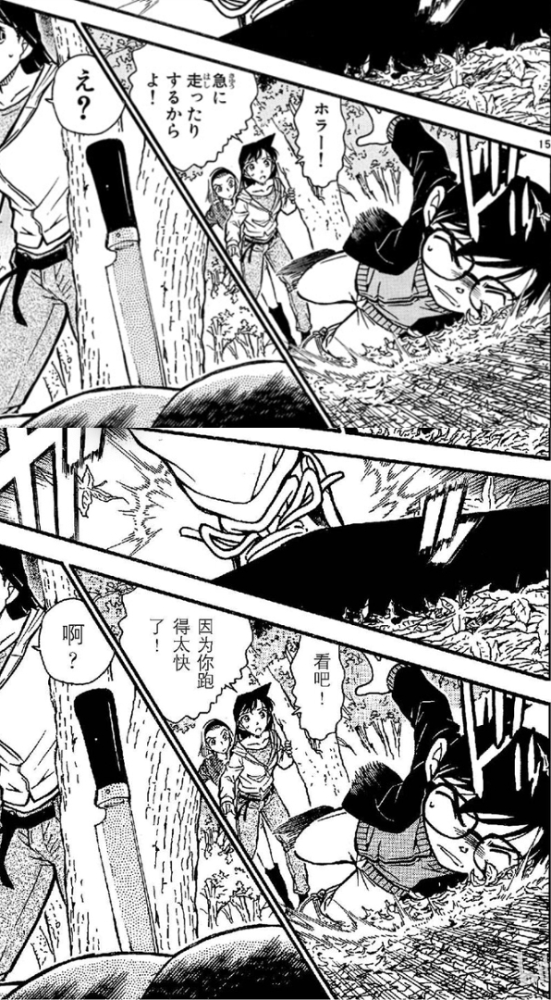
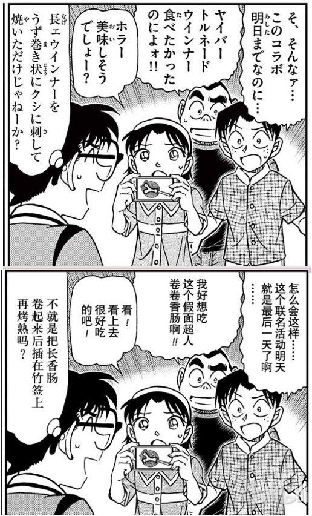
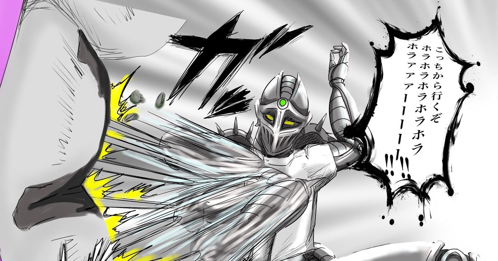

首先声明一下，本帖不算对线贴，很早之前我就想过写一份有关《寻找玛利亚篇》的详细分析，只是一直没找到合适的时机发出来。最近刚好看过有一位吧友的帖子，帖子提出1008话的标题《ホラ♡》有双关含义，暗指说出这句话的毛利兰是一个“ホラー”的人，她的爱是一种“恐怖的爱”。这里细想当然有很多问题，因此在此做一些补正，再顺便把自己对这个篇章的一些思考、以及其他的一些杂感一起放上来，供大家讨论。2L留待补楼和更新信息
主要也就三部分，第一部分简单反驳一下<恐怖的爱>论，第二部分梳理一下《寻找玛丽亚》篇本身更值得关注的几个信息点（包括标题论），第三部分略谈一下社区氛围和社区文化问题
主要也就三部分，第一部分简单反驳一下<恐怖的爱>论，第二部分梳理一下《寻找玛丽亚》篇本身更值得关注的几个信息点（包括标题论），第三部分略谈一下社区氛围和社区文化问题
首先简单转述说一下那位吧友的核心观点（但还是建议大家去看一下原帖子）
在日语中有两个词，
①ホラ （hora）通常翻译为“看吧”，但大部分情况下是写成平假名形式（ほら）而不是片假名形式
②ホラー（horaa）翻译为“恐怖”，这个词本身是外来语（源于日式英语的horror），所以写成片假名形式
在①②的基础上，那位吧友提出假设
③青山刚昌故意使用了少用的ホラ来描写小兰的发言，意在指向ホラー，所以标题表面上是“ホラ♡”，实际上是“恐怖的爱”
并进一步进行推论
④这份爱之所以恐怖，是因为毛利兰很有可能因为这段关系在朗姆面前泄露工藤新一的存在，为柯南带来真正的恐怖
在日语中有两个词，
①ホラ （hora）通常翻译为“看吧”，但大部分情况下是写成平假名形式（ほら）而不是片假名形式
②ホラー（horaa）翻译为“恐怖”，这个词本身是外来语（源于日式英语的horror），所以写成片假名形式
在①②的基础上，那位吧友提出假设
③青山刚昌故意使用了少用的ホラ来描写小兰的发言，意在指向ホラー，所以标题表面上是“ホラ♡”，实际上是“恐怖的爱”
并进一步进行推论
④这份爱之所以恐怖，是因为毛利兰很有可能因为这段关系在朗姆面前泄露工藤新一的存在，为柯南带来真正的恐怖

图片来源：那位吧友，出自漫画1008话（寻找玛利亚篇末尾）2024-04-22 14:02 | 贴吧用户_0bDS2EM:并没有错；参考自始至知的，两人只是朋友时，赤木量子；还有后面的短息事件时“让柯南转发我的短信，和别人嘲笑我”
本帖不打算讨论③→④之间的逻辑关系，仅聊一聊①②③
首先说结论，对青山刚昌而言，“ホラ”不是毛利兰专属的用语，因此①不成立；“ホラー”不一定指向“恐怖”，因此②不成立；③本身是推测，不排除有万分之一成立的可能，但也有其他更直接的解释。下面逐点说：
首先说结论，对青山刚昌而言，“ホラ”不是毛利兰专属的用语，因此①不成立；“ホラー”不一定指向“恐怖”，因此②不成立；③本身是推测，不排除有万分之一成立的可能，但也有其他更直接的解释。下面逐点说：
首先考察①
事实上，仅在1008话所在的第95卷，漫画中就至少出现过另外两次“ホラ”（都翻译为普通的“看吧”），其中一次还是柯南自己说的
事实上，仅在1008话所在的第95卷，漫画中就至少出现过另外两次“ホラ”（都翻译为普通的“看吧”），其中一次还是柯南自己说的

图片来源：1010话（黑兔亭篇）
图片来源：1014话（警视厅交通部篇）如果放眼整个名柯漫画，我们当然可以找到更多例子，比如第49卷
这里园子在说“ホラ眼鏡”时，就是希望对方把注意力放在她手上拿着的眼镜之上，这也是ホラ（ほら）的本意
【ほら】“指着某物并引起对方注意时”说出的一个词
所以508话中文翻译采取了意译的方式
夸张一点说，以上四处全部音译成“嚯——”，读者也不会有理解上的问题

图片来源：508话（本堂瑛佑初登场）这里园子在说“ホラ眼鏡”时，就是希望对方把注意力放在她手上拿着的眼镜之上，这也是ホラ（ほら）的本意
【ほら】“指着某物并引起对方注意时”说出的一个词
所以508话中文翻译采取了意译的方式
夸张一点说，以上四处全部音译成“嚯——”，读者也不会有理解上的问题
然后考察②
漫画中青山确实经常用ホラー这个词，大部分时候是和日本大众习惯一致，用于指“恐怖片、恐怖电影”之类的东西
但还是有几个反例的，第541话中，毛利兰直接使用了【ホラー！】
漫画中青山确实经常用ホラー这个词，大部分时候是和日本大众习惯一致，用于指“恐怖片、恐怖电影”之类的东西
但还是有几个反例的，第541话中，毛利兰直接使用了【ホラー！】

图片来源：541话（红手套篇）2024-04-30 16:00 | 万剑归宗417:要结合案件本身才行，这话应该是三人去小说的景点绑红带子那一段吧，被枫叶掩盖的死亡，小说的故事，加起来就是恐怖的爱
步美也有过类似的用法
从上下文语境来看，两处当然不可能是唐突说了“恐怖”，而是hora的词尾被拉长，变成了horaa，用片假名表音
中文漫画中翻译为“看吧！”没有太大问题
到这里，我们已经发现一种那位吧友忽略的可能，即使是ホラー，也有可能只是用来表音，而不是一定指向源于日式英语的horror

图片来源：1097话（海之家篇）从上下文语境来看，两处当然不可能是唐突说了“恐怖”，而是hora的词尾被拉长，变成了horaa，用片假名表音
中文漫画中翻译为“看吧！”没有太大问题
到这里，我们已经发现一种那位吧友忽略的可能，即使是ホラー，也有可能只是用来表音，而不是一定指向源于日式英语的horror
第③点本身是那位吧友提出的假设，我对此不做太多讨论，只是提出一点，一个合理的公理化假设应当具有排他性。
而在他之前，ホラ问题上还有另一种可能的解释不能被完全排除：
日常生活中确实会使用ほら而不是ホラ，但在漫画印刷过程中，这类源于拟声词的词汇，有时会统一写成片假名的形式
刚好有一个比较巧合的例子，JOJO3中银色战车发出的声音，就是片假名形态的【ホラ】（hora），国内一般翻译为【嚯啦】
而在他之前，ホラ问题上还有另一种可能的解释不能被完全排除：
日常生活中确实会使用ほら而不是ホラ，但在漫画印刷过程中，这类源于拟声词的词汇，有时会统一写成片假名的形式

图片来源：《JOJO的奇妙冒险：星尘斗士》刚好有一个比较巧合的例子，JOJO3中银色战车发出的声音，就是片假名形态的【ホラ】（hora），国内一般翻译为【嚯啦】
给第一部分做一个小结：对于1008话的标题问题，与<恐怖的爱>论相比，另一种不能被忽视的可能是，【ほら是由于印刷原因或习惯原因被写成了片假名形式的ホラ】。作为漫画作者，青山刚昌如果想让毛利兰说出【ホラー】是很容易的（就像他在541话中做的那样），可以直接用【ホラー】来双关，而不需要借用【ホラ】来搞双关。
不过，也不是说《寻找玛利亚》篇的标题研究没有意义，事实上，标题学本身就是名柯研究的一个重要分支，这三篇的标题是有深挖的意义的（也是本帖后面会简单提及的部分），只是在开始思考前，希望读者牢记：任何学科都应当以严谨为第一要务，大胆假设的同时也应当伴随着小心求证。
不过，也不是说《寻找玛利亚》篇的标题研究没有意义，事实上，标题学本身就是名柯研究的一个重要分支，这三篇的标题是有深挖的意义的（也是本帖后面会简单提及的部分），只是在开始思考前，希望读者牢记：任何学科都应当以严谨为第一要务，大胆假设的同时也应当伴随着小心求证。
因为一些看似特殊的点就提出一项神论还挺可怕的，吧友有点过于把小兰妖魔化了，诚然小兰作为女主角值得分析，可是把她往黑方推并不符合名柯这部作品的基调我觉得（甚至，我认为73已经放弃对这个角色的塑造了，更不会在来这种骇人听闻的操作）
2024-04-22 13:08 | 却不若是:撒旦论的一个分支，是推测小兰可能因为大嘴巴属性暴露新一关键线索，也不是说她会真正意义的黑化。因为真的黑化的话她的脑子也不够用，会显得比较突兀，且会占用大量篇幅来描绘她，对于故事叙述是没有太大必要的。2024-04-22 22:44 | 贴吧用户_Q7e6y1Q:一开始：过于把小兰妖魔化了。 看了撒旦论、犹大论、北斗星论、「恐怖的爱」「chu是憎恨的烙印」后：沃日，73你在下一盘大棋。2024-04-23 01:15 | Orange毛儿七:回复 neon年年 :但是最新的m27原画，新兰名场面，伦敦告白。恶魔的黄昏颜色，红色的枯萎又出现了。显然青山刚昌没有放弃。就像m26利川让说的，毛利兰的那个角都是青山刚昌自己负责的。他自始至终对毛利兰用心如一。2024-04-23 09:16 | 世界上没有真理:回复 neon年年 :毛利蘭明顯有情緒上頭的問題，還記得名柯特地提到七宗罪嗎？忌妒在拉窗簾那邊就體現出來了，以及倫敦篇情緒一來完全不管網球場幾萬人的性命，當她知道工藤新一騙她絕對不會是像蘭粉說的什麼感人相認啦！一定是會做出比拉窗簾還恐怖的行為，因為青山對毛利蘭一直都是這麼刻畫的2024-04-25 23:42 | mangomengke07:回复 贴吧用户_Q7e6y1Q :北斗星论真的有点哈人2024-04-25 23:54 | 贴吧用户_Q7e6y1Q:不看不知道一看吓一跳
回复 mangomengke07 :这情杀绝对是故意的了2024-04-29 21:23 | xxexx♤:回复 mangomengke07 :北斗星论b站有吗，在哪能看2024-04-30 19:13 | mangomengke07:回复 xxexx♤ :隔壁柯南吧搜索北斗星论
dd，顺便蹲蹲寻找玛丽亚篇分析

大家和而不同，这就是分析的魅力
很好的分析，这才是考据推理应有的态度，真相只有一个且不以立场而转移，这一年对兰的分析有盲目黑化的倾向。比起纯粹的逻辑推理，站在三次元也就是漫画载体的视角上对内容进行解读让人耳目一新，其实包括吧友提出的“杯子效应”，我也在想是不是可以搜罗名柯所有的杯子的画法，进而作出比对判断是否真的是有意为之？
2024-04-23 00:19 | Some_exe:是的，考察作者的惯用手法和意图是分析推理所必要的。
大佬，想你了
好久不见
bdbd
高质量分析
爱心的图标有没有可能用来盖住“一”，掩藏在爱下的恐怖？而且这章标题也是“ホラ♡”，有点强调意味了
2024-04-23 00:23 | Some_exe:这个♡我觉得才是这个观点的关键2024-04-23 05:39 | 贴吧用户_0Q8721R:没有办法斩钉截铁的说“不可能”，只能说证据不足。
此贴写得好
分析吧这各种暴论把小兰说的十恶不赦一样
捕风捉影牵强附会啥的都来
什么黑涩字淡都有了
日趋极端化了
之前还只是解构新兰关系寻找暗雷
现在说的小兰会主动与厨子朗姆胁田同流合污一起坑害红方，要吗就是小兰一旦知道新志柯哀感情后，还会暴打新一且做出伤害志保安全的行动，这些暴论和之前部分sr和哀黑所说的灰原是沙人番有什么区别。
这吧的环境从之前的理性推测到现在的极端化，一堆揣测小兰的贴子，分析吧啥时候变了戒兰吧了？
那些暴论接二连三的出现在此吧真的有伤风气。
此吧现在还能有楼主的这篇贴子着实不易了
部分柯哀粉极其反感小兰，但此吧主题更应该是从柯哀新志来论，分析吧还是少点小兰恶魔黑涩字淡这类的暴论。
分析吧这各种暴论把小兰说的十恶不赦一样
捕风捉影牵强附会啥的都来
什么黑涩字淡都有了
日趋极端化了
之前还只是解构新兰关系寻找暗雷
现在说的小兰会主动与厨子朗姆胁田同流合污一起坑害红方，要吗就是小兰一旦知道新志柯哀感情后，还会暴打新一且做出伤害志保安全的行动，这些暴论和之前部分sr和哀黑所说的灰原是沙人番有什么区别。
这吧的环境从之前的理性推测到现在的极端化，一堆揣测小兰的贴子，分析吧啥时候变了戒兰吧了？
那些暴论接二连三的出现在此吧真的有伤风气。
此吧现在还能有楼主的这篇贴子着实不易了
部分柯哀粉极其反感小兰，但此吧主题更应该是从柯哀新志来论，分析吧还是少点小兰恶魔黑涩字淡这类的暴论。
小兰必然不会黑化，她的善良也会一直保留。但不代表她的善良不会被朗姆利用，朗姆点名要了新一的资料，很容易查到新一的女朋友是小兰。本来寿司大叔和他们也混熟了，那么必然会接触她，至于如何利用，就看作者设计了。